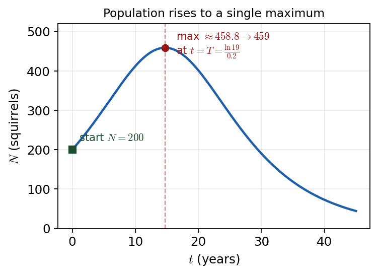

Harry → Phuc • 11 July 2026 tutorial
P3 WMA13/01 — Oct 2025 — Q5Q5 · Exponential population model, quotient rule and maximum

The model starts at \(N=200\), rises to a single maximum of \(459\) at \(t=T=\tfrac{\ln 19}{0.2}\), then declines.
Part (a) · Squirrels at the start \((t=0)\)[1]
Hide workingStrategy
"At the start" means \(t=0\); substitute and use \(e^{0}=1\).
Substitute
\[ N=\frac{4000e^{0}}{19+e^{0}}=\frac{4000(1)}{19+1}=\frac{4000}{20}. \]
Result
\( N=200 \) squirrels
Sense check
\(e^{0}=1\), so the denominator is \(19+1=20\), not \(19\).
Phuc's slip (recorded): Phuc first dropped the "\(+1\)" in the denominator. Harry: "you haven't been careful enough… plus one… be careful not to lose the one" — \(e^{0}=1\) so the denominator is \(20\).
Part (b) · Find \(\dfrac{dN}{dt}\) (quotient rule)[2]
Carry-in\(N=\dfrac{u}{v}\) with \(u=4000e^{0.1t}\), \(v=19+e^{0.2t}\).
Hide workingStrategy
Use the quotient rule (safer here than \(uv^{-1}\) with the product rule). Differentiate \(u\) and \(v\); the \(0.1\) and \(0.2\) come down.
Formula · quotient rule
\[ \frac{dN}{dt}=\frac{v\,\dfrac{du}{dt}-u\,\dfrac{dv}{dt}}{v^{2}},\qquad \frac{du}{dt}=400e^{0.1t},\ \ \frac{dv}{dt}=0.2e^{0.2t}. \]
Substitute
\[ \frac{dN}{dt}=\frac{(19+e^{0.2t})(400e^{0.1t})-(4000e^{0.1t})(0.2e^{0.2t})}{(19+e^{0.2t})^{2}}. \]
Working · expand the numerator \((e^{0.1t}e^{0.2t}=e^{0.3t})\)
\[ =\frac{7600e^{0.1t}+400e^{0.3t}-800e^{0.3t}}{(19+e^{0.2t})^{2}}. \]
Result
\( \dfrac{dN}{dt}=\dfrac{7600e^{0.1t}-400e^{0.3t}}{(19+e^{0.2t})^{2}} \)
Sense check
\(400e^{0.3t}-800e^{0.3t}=-400e^{0.3t}\); the minus sign from the quotient rule must survive.
Phuc's slip (recorded): Phuc initially dropped the minus sign in the numerator. Harry pointed to the quotient rule "hiding" in the formula book ("they use \(f\) and \(g\)… you see the minus sign here"): the \(-\) sign matters. Harry also advised against rewriting \(u/v\) as \(uv^{-1}\).
Part (c) · Show \(e^{0.2T}=A\)[2]
Carry-inMaximum \(\Rightarrow \dfrac{dN}{dt}=0\) at \(t=T\); numerator from (b): \(7600e^{0.1T}-400e^{0.3T}=0\).
Hide workingStrategy
At a maximum \(\dfrac{dN}{dt}=0\). The squared denominator can never be zero, so only the numerator matters.
Working · factor out \(e^{0.1T}\)
\[ 7600e^{0.1T}-400e^{0.3T}=0 \;\Rightarrow\; e^{0.1T}\bigl(7600-400e^{0.2T}\bigr)=0. \]
Working · reject the impossible factor
\(e^{0.1T}>0\) for all \(T\), so \(7600-400e^{0.2T}=0\), giving \(e^{0.2T}=\dfrac{7600}{400}\).
Result
\( e^{0.2T}=19,\qquad A=19 \)
Sense check
The command says
show \(e^{0.2T}=A\) — stop at \(A=19\); do not solve for \(T\) yet.
Phuc's slip (recorded): Phuc pushed on to solve for \(T\) and started with \(\log\) (base 10). Harry: "re-read the question… we've done a little bit more than we needed to do" — part (c) only asks you to show \(e^{0.2T}=19\). Save \(\ln\) and solving \(T\) for part (d).
Part (d) · Maximum number of squirrels[3]
Carry-inFrom (c): \(e^{0.2T}=19\Rightarrow T=\dfrac{\ln 19}{0.2}\) (keep stored). Note \(e^{0.1T}=\sqrt{e^{0.2T}}=\sqrt{19}\).
Hide workingStrategy
Solve for \(T\) with \(\ln\) (base \(e\)), then substitute the
stored value back into the original model \(N\). Round only at the end.
Working · \(T\) from part (c)
\[ 0.2T=\ln 19 \;\Rightarrow\; T=\frac{\ln 19}{0.2}\approx 14.72 \ \text{(unrounded / stored)}. \]
Substitute back · use \(e^{0.1T}=\sqrt{19}\), denom \(=19+19=38\)
\[ N=\frac{4000e^{0.1T}}{19+e^{0.2T}}=\frac{4000\sqrt{19}}{38}=458.83\ldots \]
Result
\( N=459 \) squirrels (to the nearest whole number)
Sense check
\(459>200\) (the start value) and matches the peak of the curve; the spoken lesson confirms "459 is fine".
Phuc's slip (recorded): Phuc was about to round \(T\) before substituting. Harry: "we only round at the very final answer… use the value you've got stored in your calculator". Evidence note: one analysis segment mis-recorded this as "959" (and mis-copied the denominator as \(19+e^{0.1t}\)); the paper model and the spoken transcript both give 459.